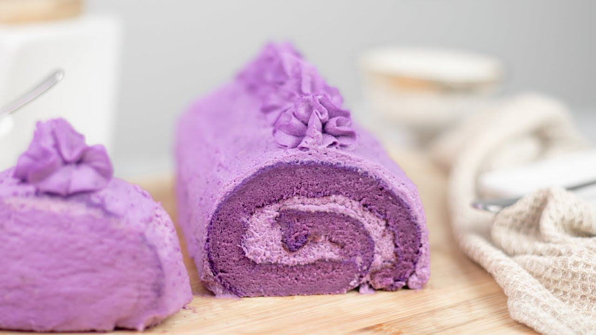
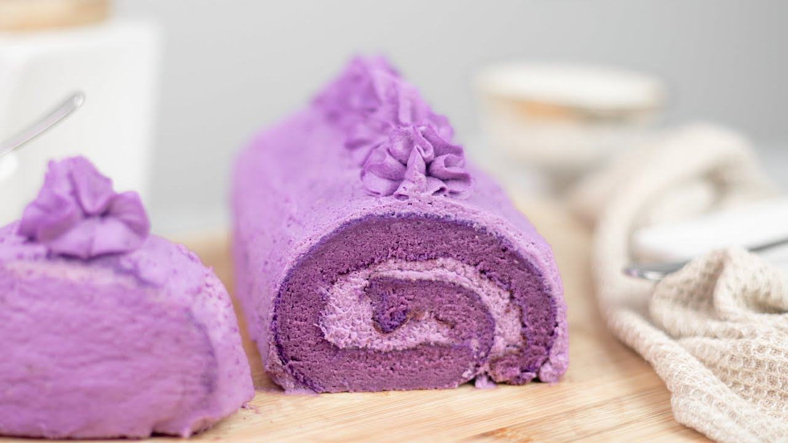
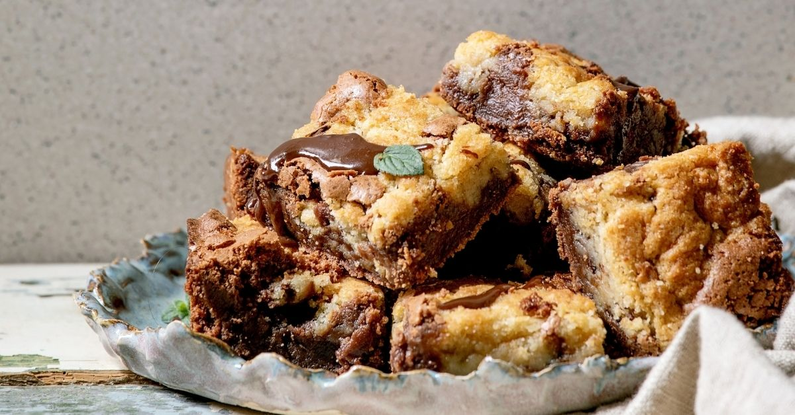
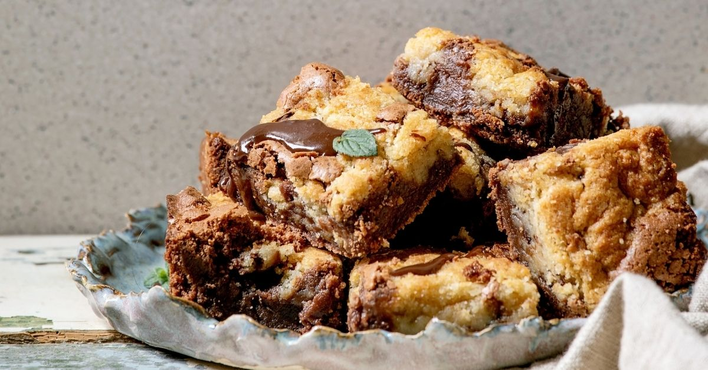

Greetings, my name is Allyson and one of my hobbies are cooking and baking! It challenging at first as it was hard to find recipes to follow, that's when I thought about making a cook book website specifically for desserts with recipes that anyone can do! As well as recipes for those who are on diet restrction, so that everyone can have a sweet treat!
 


 
